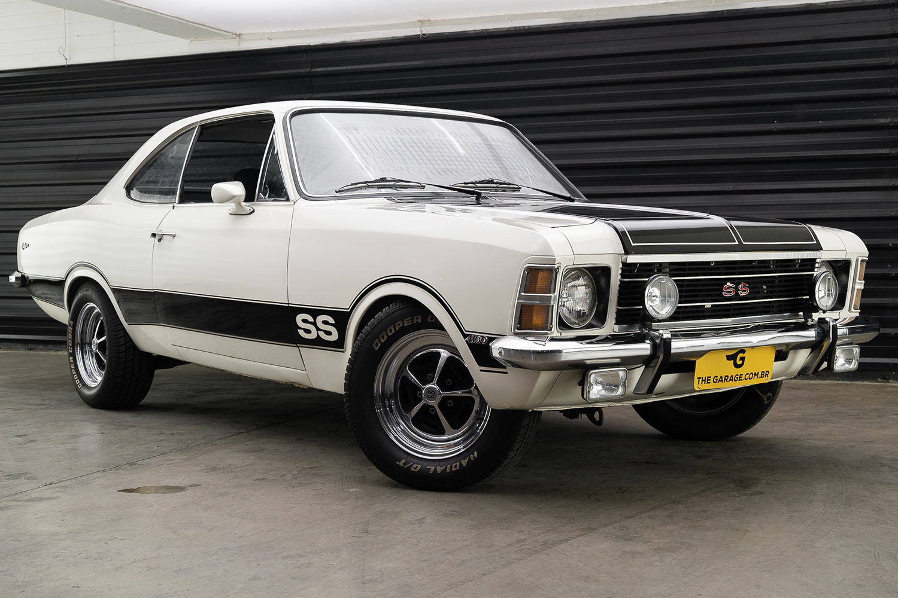
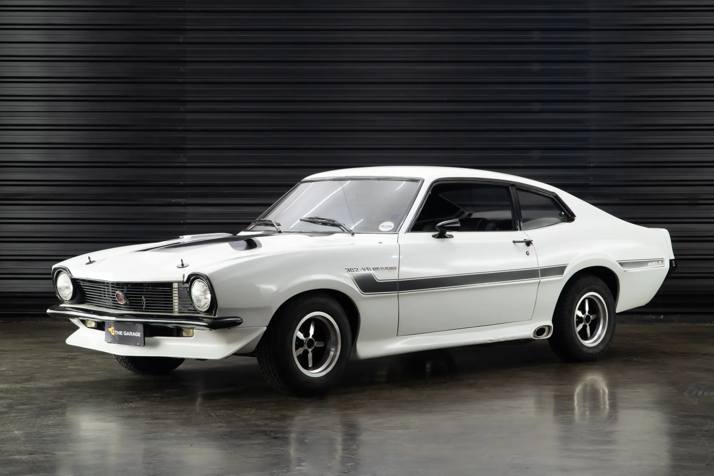
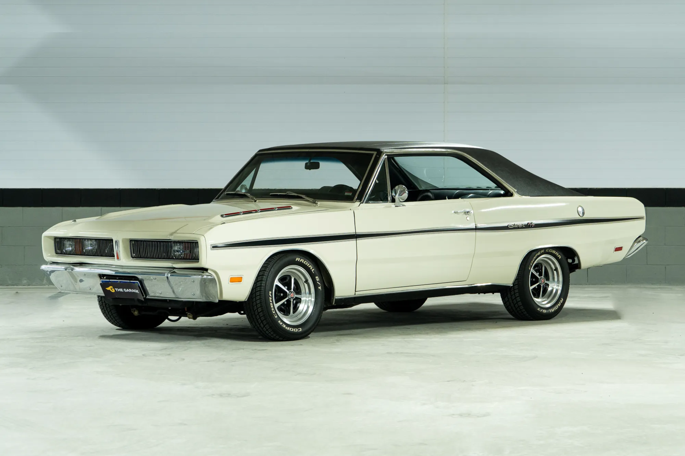
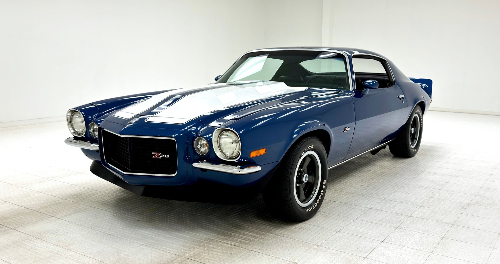

Chevrolet Opala SS
Ano: 1978
Um dos esportivos mais famosos do Brasil, conhecido pelo motor de seis cilindros e seu visual agressivo.
Os anos 70 ficaram marcados por carros robustos, motores potentes e designs que se tornaram clássicos. Conheça alguns dos veículos que fizeram história.

Ano: 1978
Um dos esportivos mais famosos do Brasil, conhecido pelo motor de seis cilindros e seu visual agressivo.

Ano: 1973
Equipado com motor V8, tornou-se um símbolo de potência e desempenho nas ruas brasileiras.

Ano: 1971
Considerado um dos muscle cars mais marcantes da década.

Ano: 1970
Um dos modelos mais emblemáticos da indústria automobilística americana.
| Modelos Clássicos dos Anos 70 | |||
|---|---|---|---|
| Modelo | Ano | Origem | Motor |
| Opala SS | 1978 | Brasil | 4.1 |
| Maverick GT | 1973 | Brasil/EUA | V8 302 |
| Charger R/T | 1971 | Brasil | V8 318 |
| Mustang Mach 1 | 1970 | EUA | V8 |
Nem todo clássico está nos catálogos... encontre o que ficou para trás.

Clássicos não desaparecem, eles se escondem.